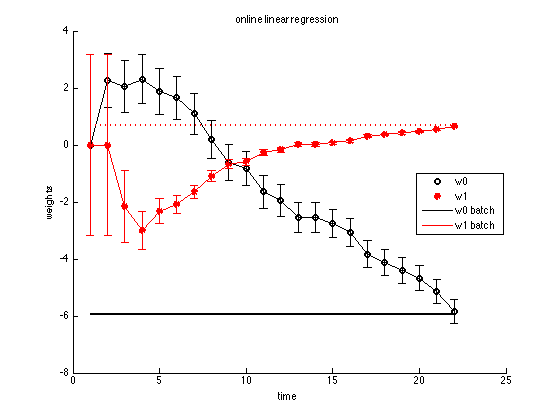

Online Bayesian linear regression using Kalman filter
standardize = false;
[xtrain, ytrain] = polyDataMake('sampling','thibaux');
if standardize
[xtrain] = standardizeCols(xtrain);
end
N = length(xtrain);
wBatch = [ones(N,1) xtrain] \ ytrain;
w = zeros(2,N+1); V = 10*eye(2);
stderr = zeros(2,N+1);
stderr(:,1) = [sqrt(V(1,1)); sqrt(V(2,2))];
sigma2 = 1;
for i=1:N
A = eye(2); C = [1 xtrain(i,:)]; Q = zeros(2,2); R = sigma2;
y = ytrain(i);
[w(:,i+1), V] = kalmanSmoother(y, A, C, Q, R, w(:,i), V);
stderr(:,i+1) = [sqrt(V(1,1)); sqrt(V(2,2))];
end
figure; hold on
h=plot(w(1,:), 'ko', 'linewidth', 2);
plot(w(2,:), 'r*', 'linewidth', 2);
errorbar(w(1,:), stderr(1,:), 'k');
errorbar(w(2,:), stderr(2,:), 'r');
plot(1:(N+1), wBatch(1)*ones(1,N+1), 'k-', 'linewidth', 2);
plot(1:(N+1), wBatch(2)*ones(1,N+1), 'r:', 'linewidth', 2);
h=legend('w0', 'w1', 'w0 batch', 'w1 batch');
title('online linear regression')
ylabel('weights')
xlabel('time')
set(h, 'location', 'east')
printPmtkFigure('linregOnlineDemoKalman')
